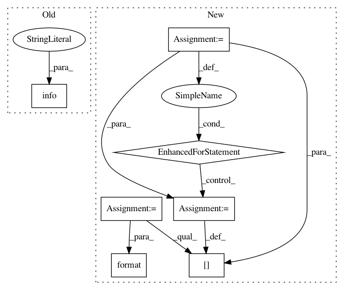

61a0663a45beb2e59f6a549c51d55940c80734e3,niftynet/io/image_as_nibabel.py,,,#,11
Before Change
from niftynet.utilities.util_import import require_module
SKIO = require_module("skimage.io", (0, 13, 0))
USE_SKIMAGE = True
tf.logging.info("+++ Using SKIMAGE as Image Loading backend")
except (ImportError, AssertionError):
tf.logging.info("+++ Using PIL as Image Loading backend")
USE_SKIMAGE = False
After Change
dict(name="pillow", module="PIL.Image", method="open")
]
AVAILABLE_LOADER = OrderedDict()
for loader in EXTERNAL_LOADERS:
try:
// Default params
min_ver = loader.get("version", None)
args = loader.get("args", tuple())
kwargs = loader.get("kwargs", dict())
// Retrieve external function
external_module = require_module(loader["module"], min_version=min_ver)
external_function = getattr(external_module, loader["method"])
// Save loader params
loader_dict = dict(fn=external_function, args=args, kwargs=kwargs)
except (ImportError, AssertionError, AttributeError):
continue
AVAILABLE_LOADER[loader["name"]] = loader_dict
tf.logging.info("+++ Available Image Loaders {}:"
.format(list(AVAILABLE_LOADER.keys())))
def image2nibabel(filename, loader=None):
In pattern: SUPERPATTERN
Frequency: 3
Non-data size: 7
Instances
Project Name: NifTK/NiftyNet
Commit Name: 61a0663a45beb2e59f6a549c51d55940c80734e3
Time: 2018-03-05
Author: rmaplue@ucl.ac.uk
File Name: niftynet/io/image_as_nibabel.py
Class Name:
Method Name:
Project Name: ray-project/ray
Commit Name: f31ee84bfdc6dc2325c8890412a965e509074d0a
Time: 2020-09-05
Author: wlx65005@gmail.com
File Name: streaming/python/runtime/transfer.py
Class Name: DataReader
Method Name: __init__
Project Name: ray-project/ray
Commit Name: 1b1466748f1db72835a594d73d502e9787e080a9
Time: 2020-09-04
Author: wlx65005@gmail.com
File Name: streaming/python/runtime/transfer.py
Class Name: DataReader
Method Name: __init__